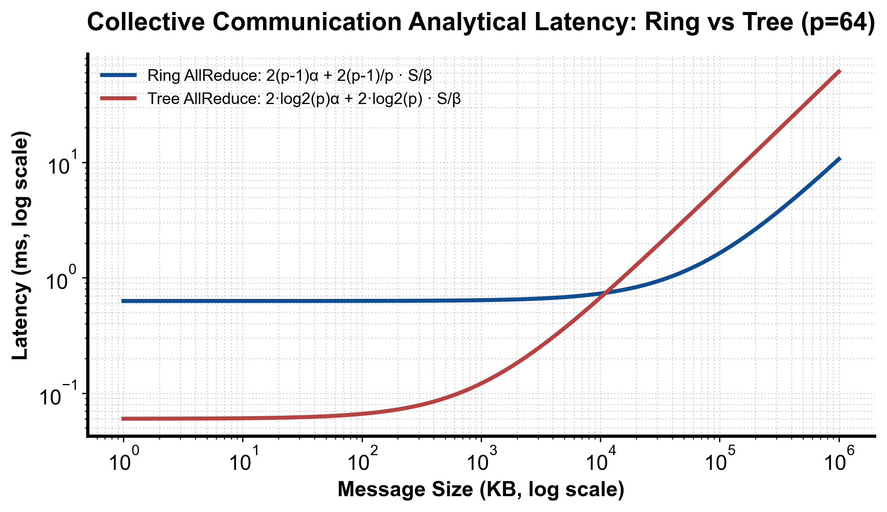

flowchart TD
Msg["待规约报文尺寸 S 与集群卡数 P"] --> Threshold{"S 是否大于环/树分界阈值?"}
Threshold -->|"S 较小 (小包)"| SelectTree["选择 Tree / CollNet 算法 (极小化延迟 α)"]
Threshold -->|"S 较大 (大张量)"| SelectRing["选择 Ring 环形切分流水 (极大化总线带宽利用率 β)"]
SelectTree & SelectRing --> PipeCheck{"跨机网络是否支持 NVLink + RoCE 异构层次?"}
PipeCheck -->|支持| TwoLevel["启用分层规约: 节点内 NVLink 规约 -> 节点间跨机网络 -> 节点内广播"]
第 4 课：Collective 成本模型与拓扑选择
参考答案版：包含完整代码实现与问答题深度参考解析。建议先独立完成练习题后再展开核对。
本课目标与完成标准
本课产出：实现 ring/tree 的 α-β 粗模型，并解释为什么模型只能筛选、不能替代 nccl-tests。
通过要求：唯一代码填空题通过给定检查；Q1～Q3 都给出因果链；能指出一个正确性边界和一个性能/运营取舍；总分至少 8/10。
与既有六条主线的边界
train/ 已计算通信量；本课把 latency α、带宽 β、消息大小和拓扑 hop 连接到 runtime algorithm 选择。
前置：Python、PyTorch、train 第 1～5 课、CUDA 基础。本课只补 AI Infra 缺口，不重复已经完成的 kernel 或并行算法推导。
核心概念与运行机制
核心操作与执行流程图解

图 4-1：Ring 与 Tree 集合通信算法理论时延模型与报文尺度分界（基于 scientific-figure-making 绘制）
图 4-2：通信报文尺度判定与层次化集合通信算法路由决策流
1. 它是什么，解决什么问题
在分布式深度学习（如 DDP 梯度规约、TP 张量并行与 FSDP 全切片）中，集合通信（Collective Communication，尤以 AllReduce 为代表）的耗时直接决定了系统的线性加速比。然而，在大规模 GPU 集群中，通信时延并不是一个静态常数，而是受到报文尺寸（Message Size \(S\)）、通信拓扑（Topology）与底层通信算法（Ring vs. Tree vs. CollNet）共同支配的动态物理过程。
为了在万卡集群中科学规划并行切分与算子重叠，AI Infra 工程师必须建立严格量化的集合通信成本模型（Communication Cost Model）： 1. \(\alpha\)-\(\beta\) 经典时延模型：将每次跨卡数据交换解构为两个正交维度——链路建立与网络握手的固有启动延迟 \(\alpha\)（Latency），以及受物理信道吞吐制约的传输每字节反向带宽 \(\beta = 1/B\)（Inverse Bandwidth）； 2. 解决算法选型黑盒问题：如图 4-1 所示，没有一种集合通信算法在所有场景下均占统治地位。Tree 算法以 \(\mathcal{O}(\log p)\) 的步数极大压缩了小报文的同步时延，而 Ring 算法以近乎 \(100\%\) 的链路带宽利用率支配了大张量规约； 3. 分层异构路由决策：如图 4-2 所示，指导 NCCL 在节点内高带宽 NVLink 与节点间跨机网络（InfiniBand / RoCE）之间自适应选择最优的层次化通信拓扑。
2. 它如何工作
集合通信的成本建模与拓扑选择建立在严格的数学推导之上（模型对比如图 4-1，决策流如图 4-2）：
- Ring AllReduce 成本推导：
- 将待传输的 \(S\) 字节张量均等切分为 \(p\) 个分块（Chunk），所有 GPU 逻辑连接成环；
- 算法分为两阶段：ReduceScatter（环形分块累加） 与 AllGather（环形分块广播）；
- 每阶段均执行 \(p - 1\) 次邻居点对点传输，每次传输的数据量为 \(\frac{S}{p}\)；
- 总耗时模型为： \[T_{\text{ring}}(S, p) = 2(p - 1)\alpha + 2\left(\frac{p - 1}{p}\right)\frac{S}{B_{\text{ring}}}\]
- 物理特性：当集群卡数 \(p \gg 1\) 时，带宽项系数 \(\frac{p-1}{p} \to 1\)，总带宽耗时恒定为 \(2S / B_{\text{ring}}\)，带宽成本与节点数完全解耦！但其延迟项 \(2(p-1)\alpha\) 随节点数线性膨胀，在集群规模扩大后对小报文极其致命。
- Tree AllReduce 成本推导：
- 节点组织为逻辑二叉树或二项式树（Binomial Tree），分为树根归约与树叶下发两阶段；
- 树的最大深度为 \(\lceil \log_2 p \rceil\)，每层跨越一步；
- 总耗时模型为： \[T_{\text{tree}}(S, p) = 2\lceil\log_2 p\rceil \alpha + 2\lceil\log_2 p\rceil \frac{S}{B_{\text{tree}}}\]
- 物理特性：延迟项仅为 \(2\log_2 p \cdot \alpha\)，相较于 Ring 实现了指数级的时延压缩（例如 64 卡下，Ring 需 126 步，而 Tree 仅需 12 步）；但由于每次树层级传输均需搬运全量或半量数据，带宽项包含 \(\log_2 p\) 乘数，导致在大报文下带宽利用率极低。
- 报文分界与分层拓扑路由（图 4-2）：
- 求解两条曲线的理论交叉阈值点 \(S^*\)： \[S^* = \frac{2(p - 1 - \log_2 p)\alpha}{2\log_2 p / B_{\text{tree}} - 2(p-1)/(p \cdot B_{\text{ring}})}\]
- 当 \(S < S^*\)（小张量，如 Tensor Parallelism 的标量同步或 MoE 门控路由）时，NCCL 自动路由至 Tree 算法；
- 当 \(S > S^*\)（大张量，如 DDP 梯度规约或 FSDP 权重拉取）时，路由至 Ring 算法；
- 面对跨机异构网络，NCCL 启用 两级分层规约（Hierarchical / Two-Level AllReduce）：节点内 8 卡通过 NVLink 执行高速 ReduceScatter，各机代表卡通过跨机 InfiniBand 环执行跨机 AllReduce，最后节点内 NVLink AllGather 广播，避免了跨机网络的多次无效数据穿梭。
3. 正确性条件与常见误区
- 标称硬件双向峰值 vs. 有效单流总线带宽（Nominal vs. Bus Bandwidth）：
- 致命误区：将厂商宣传的物理总双向带宽（例如 H100 NVLink 宣称的 \(900\ \text{GB/s}\) 双向聚合带宽）直接代入公式中的 \(B_{\text{ring}}\)；
- 正确性要求：
- 环形通信中每个节点仅在一个方向单向发送数据，单向理论峰值立即折半为 \(450\ \text{GB/s}\)；
- GPU SM 注入带宽限制、内存拷贝效率以及 NCCL 协议开销会导致进一步折扣；
- NCCL 体系中将测量得到的算法带宽（Algorithm Bandwidth）换算为具有跨算法可比性的总线带宽（Bus Bandwidth）： \[\text{Bus Bandwidth} = \text{Algorithm Bandwidth} \times \frac{2(p - 1)}{p}\] 必须以
nccl-tests在真实机器上实测的稳定 Bus Bandwidth 作为模型输入。
- NCCL 内部低延迟协议（LL vs. LL128 vs. Simple）的切换边界：
- NCCL 内部并非使用单一内存传输机制：
- LL（Low Latency）协议：每个 8 字节数据打包 8 字节 Flag 写入 CPU/GPU 缓存行，专为消除小包启动延迟设计，极速但带宽利用率腰斩；
- LL128 协议：利用 128-bit 向量指令优化中等包传输；
- Simple 协议：标准 DMA / GPUDirect RDMA 环形缓冲流水，完全释放物理总线带宽，适用于大张量。
- 若模型忽略了协议切换带来的阶跃变化，将无法解释中等尺寸报文下的性能拐点。
- NCCL 内部并非使用单一内存传输机制：
4. 性能与工程取舍
- Tree 算法的网络多对一拥塞风险（Incast Congestion）：
- Tree 算法在汇聚到树根节点时，存在多个子节点同时向父节点灌包的物理场景。在没有网内计算（In-Network Computing / NVIDIA SHARP）支持的普通以太网或交换机上，极易引发严峻的微突发与 Incast 拥塞，导致报文丢弃与重传时延雪崩；
- 只有在支持硬件级网内规约（如 InfiniBand SHARP / CollNet）的先进超算网络中，Tree 规约的算力才能达到理想极致。
- 粗模型筛选 vs. 真实基准实测（Model Filtering vs. Micro-benchmarking）：
- \(\alpha\)-\(\beta\) 模型是一个优秀的静态筛选器（Filter），能瞬间帮助架构师排除明显错误的拓扑设计与切分策略；
- 但它无法感知由于 NUMA 绑定错误、PCIe Switch 链路争用、热节流掉队者（Straggler）或网络 PFC 死锁带来的动态系统抖动。工程定案前必须在物理集群上运行完整的
all_reduce_perf压测矩阵并绘制全报文带宽谱图。
具体演示
设集群规模为 64 张 GPU（\(p = 64\)），跨卡通信单跳延迟 \(\alpha = 5\ \mu\text{s}\)，有效单向带宽 \(B_{\text{ring}} = B_{\text{tree}} = 100\ \text{GB/s}\)： 1. 小报文规约（\(S = 1024\ \text{Bytes} = 1\ \text{KB}\)）： - Ring 算法延迟步数：\(2 \times (64 - 1) = 126\) 步； \[T_{\text{ring}} = 126 \times 5\ \mu\text{s} + 2 \times \frac{63}{64} \times \frac{1024}{100 \times 10^9} \approx 630\ \mu\text{s} + 0.02\ \mu\text{s} \approx 630.02\ \mu\text{s}\] - Tree 算法层数：\(\lceil\log_2 64\rceil = 6\) 层，总步数 \(2 \times 6 = 12\) 步； \[T_{\text{tree}} = 12 \times 5\ \mu\text{s} + 12 \times \frac{1024}{100 \times 10^9} \approx 60\ \mu\text{s} + 0.12\ \mu\text{s} \approx 60.12\ \mu\text{s}\] - 结论：Tree 算法以 \(10.5\times\) 的绝对速度碾压 Ring 算法，耗时由启动延迟 \(\alpha\) 绝对主导。 2. 大报文规约（\(S = 1\ \text{GB} = 10^9\ \text{Bytes}\)）： - Ring 带宽项占主导： \[T_{\text{ring}} \approx 630\ \mu\text{s} + 2 \times \frac{63}{64} \times \frac{10^9}{100 \times 10^9} \approx 0.00063\ \text{s} + 0.01969\ \text{s} \approx 20.32\ \text{ms}\] - Tree 带宽项乘数放大： \[T_{\text{tree}} \approx 60\ \mu\text{s} + 12 \times \frac{10^9}{100 \times 10^9} \approx 0.00006\ \text{s} + 0.12\ \text{s} \approx 120.06\ \text{ms}\] - 结论：Ring 算法反超 Tree 算法 近 6 倍！带宽项 \(\beta\) 成为决定性瓶颈。
实践任务：唯一代码填空题
补齐 ring/tree 粗略时间，并返回更快算法名。单位统一为秒、字节、字节/秒。
只能修改 TODO/______ 位置，不得删除断言或放宽通过条件。
Code
import math
def choose_allreduce(world, nbytes, alpha_s, ring_bw, tree_bw):
if world < 2 or nbytes < 0 or alpha_s < 0 or ring_bw <= 0 or tree_bw <= 0:
raise ValueError("invalid model")
ring = 2 * (world - 1) * alpha_s + 2 * (world - 1) / world * nbytes / ring_bw
levels = math.ceil(math.log2(world))
tree = 2 * levels * alpha_s + 2 * levels * nbytes / tree_bw
# TODO：同时返回选择和两种估算，便于审计。
return ______
name, ring_t, tree_t = choose_allreduce(64, 1024, 5e-6, 100e9, 100e9)
assert name == "tree" and tree_t < ring_t检查方法
运行本单元格，所有断言必须通过；再补一个边界输入并解释预期。
Q1
为什么把 NVLink 总双向带宽直接代入 B 会过度乐观？
你的答案：
Q2
小消息 tree 更快的核心原因是什么？
你的答案：
Q3
模型预测 ring 快，实测却慢，排查顺序是什么？
你的答案：
评分规则
- 代码 4 分：正常输入 2 分、边界输入 1 分、解释 1 分；
- Q1～Q3 各 2 分；
- 一票否决：混淆测量与推测、忽略租户/请求隔离、用平均值掩盖尾延迟、删除失败路径。